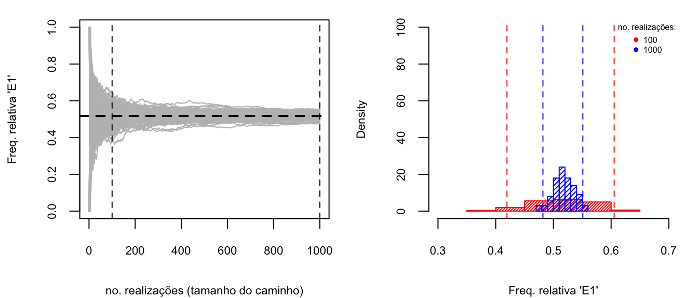

# Variáveis
# nRep: no. de replicações do experimento
# n1: no. de lançamentos de 1 dado no Experimento 1
# n2: no. de lançamentos de 2 dados no Experimento 2
nRep <- 1000
n1 <- 4
n2 <- 24
# Respostas
# frel.E1: frequencia relativa do evento E1 para o Experimento 1
# frel.E2: frequencia relativa do evento E2 para o Experimento 2
frel.E1 <- c()
frel.E2 <- c()
# Variáveis intermediárias: registram a cada jogo se o Chevalier venceu
ganhou.E1 <- c()
ganhou.E2 <- c()GED-13: Probabilidade e Estatística
Capítulo 03
Introdução à Teoria de Probabilidades
Introdução à Teoria de Probabilidades
Breve Histórico
A Teoria de Probabilidades é a disciplina matemática que trata de fenômenos aleatórios, através da construção dos chamados modelos probabilísticos.
Atribui-se a Aristóteles a declaração de que, para a melhor compreensão de algo, é necessário observar suas origens e seu desenvolvimento. Sendo assim, para que tenhamos uma melhor apreciação da Teoria Matemática de Probabilidades, é interessante observar suas origens.
Chance e Incerteza
Chance e incerteza são conceitos tão antigos quanto a civilização; os seres humanos sempre estiveram sujeitos e, por este motivo, sempre se esforçaram para compreender e reduzir as incertezas presentes em seu ambiente, a fim de garantir sua sobrevivência.
As primeiras civilizações agrícolas, por exemplo, eram profundamente sensíveis a flutuações climáticas. Uma enchente poderia destruir toda a reserva de grãos necessária para alimentar um povoado; uma seca poderia ser igualmente destrutiva, tornando os estoques de água insuficientes para atender de maneira satisfatória as necessidades locais. Doenças, conflitos e escassez de recursos necessários tornavam a existência humana extremamente incerta e frágil. E, assim, em resposta a essas vulnerabilidades, com o tempo, os seres humanos passaram a desenvolver meios de prever mudanças em seu ambiente a fim de melhor se proteger.
Jogos de Azar
Também, desde tempos remotos, os seres humanos conscientemente e intencionalmente produziram aleatoriedade utilizando dados, ossos de animais, conchas ou outros objetos com diversas finalidades, como para proporcionar entretenimento, para prever o futuro ou como uma maneira de se comunicar com o sobrenatural.
As civilizações antigas da Grécia, Roma e Egito, por exemplo, utilizavam astrágalos (pequenos ossos do calcanhar de certos animais que serviam como dados assimétricos de 4 lados) para realizar divinações ou previsões; e era popular entre os antigos egípcios (e me refiro a um período por volta de 2000 anos AC) um jogo de azar chamado “cães e chacais”;
O dado cúbico foi desenvolvido por volta de 1500 AC. Os jogos de azar envolvendo dados eram uma obsessão tão grande entre os antigos romanos, que se tornaram ilegais, exceto em ocasiões especiais, como durante grandes eventos como o festival Saturnalia, torneios de gladiadores ou corridas.
O fato é que, através da prática de jogos de azar, os seres humanos desenvolveram intuição a respeito da aleatoriedade e das probabilidades, associadas, neste caso, à frequência de observação de certos eventos imprevisíveis. No entanto, apesar desse envolvimento com processos aleatórios controlados, as pessoas ainda não compreendiam a aleatoriedade em termos matemáticos.
Origem da Teoria Matemática de Probabilidades
O desenvolvimento de uma teoria matemática de probabilidades é um evento muito mais recente na história humana. Apenas no século XVI é que surgiram os primeiros estudos matemáticos a respeito de eventos envolvendo incertezas ou o acaso. Luca Paccioli (1445-1514), Nicolò Tartaglia (1499-1557), Girolamo Cardano (1501-1576) e Galileu Galilei (1564-1642) foram os primeiros matemáticos proeminentes que calcularam probabilidades associadas a diferentes jogos de azar; eles também tentaram construir bases matemáticas para o cálculo de probabilidades.
Ainda assim, a primeira contribuição significativa para a construção de fundamentos matemáticos para a teoria de probabilidades se deu em 1654, através de uma troca de correspondência entre os matemáticos franceses Blaise Pascal (1623-1662) e Pierre de Fermat (1601-1665) que, na necessidade de determinar a probabilidade de certos resultados obtidos em jogos de azar, acabaram construindo métodos para a enumeração combinatória das possibilidades.
Tal discussão foi motivada por um desafio proposto por Antoine Gombaud, autodenominado Chevalier de Méré, ao seu amigo Blaise Pascal. De Méré foi um escritor e filósofo conhecido, uma figura importante na corte do rei Luis XIV, além de um aficcionado por jogos de azar.
De Méré apresentou a Pascal dois problemas para os quais não conseguia encontrar a solução correta:
- O problema dos dados e;
- O problema dos pontos.
No problema dos dados, de Méré desejava determinar o número crítico de lançamentos, isto é, o número de jogadas necessárias para alcançar 50% de chance de obter pelo menos um sucesso em dois jogos de dados. Ele não compreendia “Por que era mais fácil obter pelo menos um ‘6’ em 4 lançamentos de um dado do que pelo menos um ‘duplo 6’ em 24 lançamentos de um par de dados?” Este problema ficou conhecido como “O Paradoxo de de Méré”.
Já no problema dos pontos, a questão colocada era como repartir de maneira justa, entre dois jogadores, o prêmio de um torneio que é interrompido antes que chegue ao fim. Diferentes noções de justiça podem ser utilizadas para determinar como o prêmio deve ser dividido; por exemplo, os jogadores podem partilhar igualmente o prêmio; ou, o jogador com maior pontuação pode levar todo o dinheiro… A solução proposta por Pascal foi absolutamente revolucionária na história da teoria de probabilidades. Ele sugeriu que o prêmio fosse dividido de acordo com a expectativa de vitória de cada jogador, com base em suas pontuações no momento em que o jogo foi interrompido, ou seja, deveria ser calculada considerando a probabilidade de cada um dos jogadores vencer, dado o atual estágio do torneio, em que há ainda um certo número de jogos ou pontos para atingir.
No futuro, nós falaremos mais sobre esta e também a respeito de outras contribuições de Pascal tanto para a Teoria Matemática de Probabilidades, bem como para a Teoria de Decisão.
Formalização Matemática
Como veremos mais adiante, há várias maneiras de interpretar o conceito probabilidade e, a partir do século XVII, diversos matemáticos se debruçaram sobre o problema de como formalizá-lo, alcançando maior ou menor sucesso.
Uma das dificuldades no desenvolvimento de uma teoria matemática das probabilidades consistia em obter uma definição de probabilidade precisa o bastante para ser usada em matemática, e abrangente o suficiente para ser aplicável a uma grande variedade de problemas.
Este objetivo só foi finalmente alcançado com a definição axiomática, proposta por Andrei Kolmogorov e publicada em 1933 no livro “Fundamentos de Teoria de Probabilidades”. Neste trabalho, ele declara acreditar que “a Teoria das Probabilidades, como disciplina matemática, poderia e deveria ser desenvolvida exatamente como a Geometria ou a Álgebra, a partir de axiomas”, com base nos quais todos os desenvolvimentos subsequentes deveriam ser obtidos.
Contando com uma definição formal e abrangente, a teoria de probabilidades passou a ser aplicada nas mais diversas áreas do conhecimento e atividade humanos, incluindo engenharia, economia, negócios, ciêcias, psicologia e tantas outras, de forma que o conhecimento de Teoria de Probabilidades é algo indispensável nos dias de hoje.
Definições Iniciais
Um modelo probabilístico consiste em uma descrição matemática de uma situação de incerteza. Os modelos probabilísticos são constituídos por alguns elementos básicos, ilustrados na Figura 1: temos um experimento aleatório associado a um espaço amostral (coleção de resultados possíveis) que, por sua vez, é composto por uma coleção de eventos para os quais é possível definir uma lei de probabilidade. Essa lei, por sua vez, quantifica o grau de incerteza de cada evento. Examinaremos, a seguir, cada um desses elementos.

Experimento Aleatório
Um experimento aleatório (E) é um processo cujo resultado é desconhecido e não pode ser previsto com certeza, mas que pode, pelo menos em teoria, ser repetido um número indefinido de vezes sob condições idênticas. Em tais experimentos, ainda que tenhamos um conjunto conhecido de resultados possíveis, não há garantia de que um determinado resultado vá ocorrer. A incerteza está, portanto, no fato de não sabermos qual dos resultados possíveis acontecerá ao realizarmos o experimento.
Por exemplo, considere o experimento de lançar um dado e observar o número que aparece na face superior. Conhecemos de antemão que os resultados possíveis deste experimento são 1, 2, 3, 4, 5 ou 6, mas não temos como prever exatamente qual deles ocorrerá em um lançamento específico. Além disso, poderíamos repetir esse experimento indefinidamente, supostamente nas mesmas condições.
Espaço Amostral e Eventos
O conjunto formado por todos os resultados elementares possíveis de um experimento aleatório é chamado espaço amostral, usualmente representado por \(\Omega\). Qualquer subconjunto de \(\Omega\) recebe o nome de evento e é representado por letras maiúsculas do alfabeto latino (A, B, C, D etc.).
Um evento pode ser simples (quando não se decompõe em outros eventos mais elementares) ou composto (união de eventos elementares). Na prática, um evento corresponde a um conjunto de resultados de um experimento aleatório que satisfaz determinadas condições.
Mesmo para um experimento aleatório trivial, é importante identificar e descrever cada evento elementar, como mostra o exemplo a seguir:
Eventos Especiais e Operações
- Evento Impossível \(\varnothing\)
Também chamado de evento nulo, é o evento que não pode ocorrer (por exemplo, obter um resultado maior que 6 ao lançar um dado). Matematicamente, corresponde ao conjunto vazio.
- União \(A \cup B\)
É o conjunto dos resultados em que ocorre \(A\) ou \(B\), incluindo a possibilidade de ambos ocorrerem simultaneamente.
Por exemplo, considere novamente o lançamento de um dado e definamos os eventos:
\(A\) = resultado par = \(\{2, 4, 6\}\)
\(B\) = resultado ímpar = \(\{1, 3, 5\}\)
Então {A \(\cup\) B} = {1, 2, 3, 4, 5, 6} = \(\Omega\)
- Interseção \(A \cap B\)
É o conjunto dos resultados em que ocorrem simultaneamente os eventos \(A\) e \(B\).
Por exemplo, considere novamente o lançamento de um dado e definamos os eventos:
\(A\) = resultado par = \(\{2, 4, 6\}\)
\(C\) = resultado maior que 3 = \(\{4, 5, 6\}\)
Então \(A \cup C = \{4, 6\}\)
- Eventos Mutuamente Exclusivos \(A \cap B = \varnothing\)
Dois eventos são mutuamente exclusivos se a ocorrência de um deles impede a ocorrência do outro, de forma que é impossível observar a ocorrência simultânea dos dois. Portanto, a intersecção entre os conjuntos que o definem é o conjunto vazio.
No exemplo do lançamento do dado, os resultados pares (evento \(A\)) e ímpares (evento \(B\)) não podem ocorrer simultaneamente:
\(A \cap B = \{2, 4, 6\} \cap \{1, 3, 5\} = \{ \} = \varnothing\)
- Partição do Espaço Amostral
Um conjunto de eventos mutuamente exclusivos e coletivamente exaustivos (cuja união corresponde ao espaço amostral) forma uma partição de \(\Omega\). Se \(A \cap B = \varnothing\) e \(A \cup B = \Omega\), dizemos que \(A\) e \(B\) formam uma partição do espaço amostral.
Duas definições adicionais importantes para teoria de probabilidades são idênticas àquelas correspondentes em teoria de conjuntos:
- Evento Complementar \(A^\prime\) ou \(A^C\)
O complementar de um evento \(A\) corresponde ao evento que ocorre apenas se \(A\) não ocorrer.
- Diferença entre Eventos \(A - B\) ou \(A \cap B^C\)
Descreve a ocorrência de A mas não a de B.
A diferença \(A-B\) pode ser representada matematicamente pela interseção entre o evento A e o complementar de B.
Por exemplo, considere os eventos:
\(A = \{2, 4, 6\}\)
\(B = \{1, 3, 5\}\)
Então \(\{A - B\} = A \cap B^C = \{2, 4, 6\} \cap \{2, 4, 6\} = \{2, 4, 6\}\)
Descrevemos o espaço amostral em termos da definição matemática de conjunto. Portanto, podemos manipular matematicamente os eventos utilizando álgebra de conjuntos. A tabela abaixo mostra a equivalência entre os conceitos fundamentais de teoria de conjuntos e a terminologia utilizada em teoria de probabilidades.

Lei de Probabilidade
A lei de probabilidade \(P[A]\) associa a cada evento no espaço amostral (\(A \subseteq \Omega\)) um valor numérico não negativo que quantifica a “propensão” de \(A\) ocorrer. Na ilustração da Figura 1, altura de cada “barra” representa uma medida de incerteza ou a probabilidade associada à ocorrência dos eventos correspondentes.
A escolha de como atribuir probabilidades aos eventos é crucial. Uma vez definidas as probabilidades, cabe à teoria matemática apenas a tarefa de realizar os cálculos. Existem diversas interpretações para o conceito de probabilidade, como veremos a seguir.
Interpretações de Probabilidade
“Probability is the most important concept in modern science, especially as nobody has the slightest notion what it means.”
—Bertrand Russell, 1929 Lecture
Veremos a seguir algumas interpretações do conceito de probabilidade, que podem ser úteis para responder a diferentes tipos de perguntas que envolvem situações de incerteza.
A interpretação clássica (ou a priori) deve-se principalemente aos trabalhos de Pierre-Simon Laplace que, em 1812, propôs a primeira tentativa rigorosa de definir probabilidade. Antes dele, a teoria de probabilidades se concentrava em questões pontuaisenvolvendo jogos de azar, sem uma formulação unficada. Em seu livro “Teoria Analítica das Probabilidades”, Laplace introduziu uma grande quantidade de novas idéias e técnicas matemáticas e mostrou aplicações científicas e práticas, como teoria dos erros, mecânica estatística e ciências atuariais. Laplace foi um matemático prodigioso, que deu contribuições a todos os problemas matemáticos existentes em sua época.
Segundo a interpretação clássica, o primeiro passo para definir probabilidade consiste em representar o espaço amostral (o espaço de possibilidades) como um conjunto de eventos igualmente prováveis, mutuamente exclusivos e coletivamente exausivos, isto é, devemos ter uma partição do espaço amostral em eventos equiprováveis. Assim, a probabilidade de ocorrência de um evento \(A\) é dada pela razão entre o número de resultados favoráveis a \(A\) (\(n_A\)) e o número total de resultados possíveis (\(N\)). Como o espaço amostral é definido antes (ou independentemente) da realização do experimento aleatório, esta definição determina probabilidades a priori.
O que significa dizer que um resultado é “favorável”?
Suponhamos que um dado honesto seja lançado e que desejamos determinar a probabilidade de observar um resultado ímpar. A fim de utilizar a definição clássica de probabilidade, precisamos de uma representação do espaço amostral formada por uma partição de eventos equiprováveis:
\(\{1, 2, 3, 4, 5, 6\}\)
Os resultados favoráveis ao evento “o resultado é ímpar” são \(\{1, 3 , 5\}\) e correspondem a 3 dos 6 resultados possíveis; portanto, \(n_A = 3\) e \(N = 6\), de forma que a probabilidade desejada é
\[ P_{\textsf{ímpar}} = \frac{3}{6} = \frac{1}{2} \]
A abordagem clássica, embora conceitualmente simples, apresenta algumas limitações. Ela não pode ser aplicada para calcular a probabilidade de eventos associados a um experimento com um número infinito de resultados possíveis; não é capaz de definir a probabilidade de eventos supostamente não equiprováveis, além de ser uma definição circular: o conceito de equiprobabilidade dos resultados é baseado no conceito de probabilidade que queremos definir.
Além disso, a noção de “equiprovável” depende do chamado princípio da indiferença, que afirma que quando não há razão aparente para distinguir dois resultados, atribui-se a ambos a mesma probabilidade. Contudo, essa suposição pode ser frágil ou inadequada em muitos contextos, já que muitas situações do mundo real não seguem essa estrutura ou envolvem infinitas possibilidades.
De acordo com a interpretação empírica (ou frequentista), a probabilidade de um evento A corresponde ao limite da frequência relativa de sua ocorrência conforme o onforme o número de repetições do experimento aleatório tende ao infinito.
Segundo esta interpretação, para determinar a probabilidade de obter resultado ímpar ao lançar um dado, bastaria repetir o experimento de lançar o dado um grande número de vezes, em condições uniformes, registrar a proporção de vezes em que o resultado sai ímpar e observar o valor ao qual essa proporção converge.
A definição de frequência relativa difere da definição clássica das seguintes maneiras:
Ela não se refere ao princípio da indiferença; pelo contrário, as probabilidades de ocorrência dos eventos não podem ser determinadas antes da realização do experimento, através da simples análise do espaço amostral e, por esta razão, as probabilidades nesta definição são determinadas a posteriori.
Probabilidades não podem ser definidas para uma única realização do experimento. Não existe probabilidade de obter um resultado ímpar em um único lançamento de um dado honesto.
Esta definição se apóia no “princípio da regularidade estatística”, que determina que eventos aleatórios apresentam uma certa regularidade ao serem realizados um número muito grande de vezes. Quando um experimento aleatório é replicado, os resultados diferem de maneira imprevisível de uma realização para outra. Uma sequência de realizações constitui um caminho aleatório e diferentes caminhos aleatórios são únicos, distintos entre si, mas apresentam um comportamento estável no longo prazo. Desta forma, a frequência relativa de ocorrência de um certo evento se estabiliza quando o número total de realizações do experimento aumenta e, assim se aproxima de um limite, que define a probabilidade deste evento.
Von Mises acreditava que um valor numérico de probabilidade somente fazia sentido no caso de um experimento replicável. Sendo assim, para ele, a teoria de probabilidades não poderia ser aplicada para calcular a probabilidade de observar eventos únicos, tais como quando queremos saber “qual a chance de um determinado time vencer o próximo campeonato?”. No entanto, é claro que as pessoas associam valores numéricos para probabilidades na hora de fazerem suas apostas, por exemplo. Para Von Mises, porém, probabilidades desta natureza estão fora do domínio da teoria de probabilidades em um sentido estritamente frequentista.
E este é exatamente o tipo de situação tratada pelo conceito subjetivo de probabilidade, apresentada em seguida.
Na abordagem subjetiva, probabilidades refletem julgamentos individuais sobre a chance de algo ocorrer, ainda que tais eventos não sejam replicáveis ou equiprováveis. Por exemplo, ao afirmar “acredito que há 70% de chance de chover amanhã”, um pescador embasa-se na previsão do tempo, dados históricos e na própria experiência. Outro pescador, com mais ou menos informações, pode chegar a um valor diferente (80% ou 60%, por exemplo).
Desse modo, eventos como “probabilidade de um candidato vencer as eleições” ou “chance de sucesso em uma cirurgia complexa” podem ser analisados sob a ótica subjetiva, visto que são fortemente influenciados por informações parciais, opiniões de especialistas e dados incompletos.
Considerações sobre as Diferentes Interpretações
As três interpretações de probabilidade (clássica, empírica/frequentista e subjetiva) se complementam ao permitir quantificar incertezas em cenários distintos. Cada uma responde a perguntas diferentes. A interpretação clássica é útil quando o espaço amostral é finito e equiprovável (como em jogos de azar), definindo probabilidades a priori. A interpretaçao empírica/frequentista baseia-se na repetição de experimentos e análise de frequências relativas a posteriori, sendo aplicável em problemas onde é viável coletar dados de múltiplas repetições sob condições semelhantes. A interpretação subjetiva lida com crenças individuais e incorpora informação incompleta, sendo empregada em cenários em que a repetição do experimento é inviável ou impossível, ou nos quais diferentes agentes podem ter níveis distintos de conhecimento.
Em última análise, a forma como atribuímos probabilidades depende tanto da natureza do problema quanto dos objetivos práticos. Qualquer que seja a interpretação adotada, a definição axiomática de Kolmogorov (descrita a seguir) garante que as propriedades matemáticas da probabilidade sejam consistentes.
Definição Axiomática
A formalização matemática da teoria de probabilidades deve-se principalmente a Andrey Kolmogorov (1933). Sua definição axiomática estabelece um conjunto de regras universais, que se aplicam a qualquer interpretação de probabilidade. Essa é, portanto, uma definição rigorosa, que estabelece os critérios necessários para garantir que uma função matemática qualquer seja considerada uma função probabilidade.
Espaço de Eventos \(\mathcal{A}\)
Para definir função probabilidade, é necessário definir um espaço de eventos \(\mathcal{A}\), que corresponde à coleção de todos os subconjuntos do espaço amostral \(\Omega\).
Formalmente, \(\mathcal{A}\) deve satisfazer as seguintes condições:
- \(\Omega \in \mathcal{A}\)
- Se \(A \in \mathcal{A}\) então o complementar \(A^C \in \mathcal{A}\)
- Se \(A, B \in \mathcal{A}\), então \(A \cup B \in \mathcal{A}\)
O espaço de eventos \(\mathcal{A}\) não deve ser confundido com o espaço amostral \(\Omega\), pois enquanto o espaço amostral de um experimento aleatório contém todos os resultados possíveis deste experimento (isto é, a coleção de todos os eventos simples), o espaço de eventos contém todos os conjuntos de resultados do experimento, isto é, todos os subconjuntos do espaço amostral. O espaço de eventos inclui o espaço amostral \(\Omega\) e é fechado para o complemento e para a união de eventos.
Função Probabilidade
Dada uma coleção de eventos \(\mathcal{A}\) associada ao experimento aleatório, define-se a função de probabilidade como
\(P: \mathcal{A} \longrightarrow \Re,\)
que atende aos seguintes aximomas:
\(P[A] \geq 0\) para todo \(A \in \mathcal{A}\)
\(P[\Omega] = 1\)
Se \(\{A_i\}\) é uma coleção enumerável de eventos mutuamente exclusivos, então
\[P\left[ \cup_{i=1}^\infty A_i\right] = \sum_{i=1}^{\infty} P[A_i]\]
Em outras palavras, uma função real \(P\) definida no espaço de eventos do experimento aleatório é função probabilidade se satisfaz as seguintes condições:
- a probabilidade de qualquer evento é sempre um valor não negativo;
- se um evento é certo, então sua probabilidade vale 1 (em outras palavras, toda vez que o experimento aleatório é realizado, algum dos eventos que compõem o espaço amostral necessariamente precisa ocorrer); e, finalmente,
- existe aditividade contável para eventos que não possam ocorrer simultaneamente.
Note que a definição axiomática não nos ensina como escolher a função de probabilidade; ela não nos ensina como calcular o valor de \(P\) para um determinado evento conhecido \(A \in \mathcal{A}\) e tampouco nos revela a natureza de processos aleatórios. A definição matemática garante, no entanto, que qualquer função que satisfaça os três axiomas terá certas propriedades que intuitivamente associamos a uma probabilidade, sob quaisquer das interpretações descritas anteriormente.
Propriedades de Função Probabilidade
A partir dos três axiomas que definem função probabilidade, é possível deduzir uma série de propriedades importantes:
\(P[\varnothing] = 0\)
Para uma coleção finita de eventos mutuamente exclusivos \(A_1, A_2, \ldots, A_n\), vale
\[P\left[\cup_{i=1}^{n}A_i\right] = \sum_{i=1}^{n} P[A_i]\quad\] \(\Rightarrow \quad P[B] = P[B\cap A] + P[B\cap A^C]\)
\(P[A] + P[A^C] = 1\)
\(0 \leq P[A] \leq 1\), para qualquer evento \(A\)
Regra da Adição: \[P[A \cup B] = P[A] + P[B] - P[A \cap B]\quad\] Essas propriedades são coerentes com nossa intuição sobre probabilidade — por exemplo, o evento impossível (\(\varnothing\)) tem probabilidade zero, e a probabilidade de um evento mais o seu complementar soma 1. No entanto, a definição axiomática, por si só, não diz como devemos atribuir o valor de \(P[A]\) para cada evento \(A\). Essa escolha depende justamente das abordagens clássica, frequentista ou subjetiva (entre outras) e do contexto em que o experimento se insere.
Revisitando o Paradoxo de De Méré:
O Problema dos Dados
“A probabilidade de obter pelo menos um ‘6’ em 4 lançamentos seguidos de um dado deveria ser a mesma de obter pelo menos um ‘6 duplo’ em 24 lançamentos de um par de dados”
—Chevalier de Méré (Antoine Gombaud, 1607-1684)
Na França do século XVII, jogos de azar (jeux de hasard) eram uma prática disseminada entre a nobreza e esta era considerada, sobretudo, uma atividade refinada na corte do rei Luis XIV, a tal ponto de ser reconhecida como a única forma “honrada” de um nobre endividado (algo muito comum na época) obter algum dinheiro. Em realidade, etiqueta, jogos e divertimentos foram maneiras sutis que Louis XIV encontrou de manipular e enfraquecer econômicamente a nobreza, que passou a ser endividada demais para armar exércitos que pudessem se levantar contra o rei, e cujo destino dependia da capacidade de agradá-lo.
Embora não fosse de origem nobre, Antoine Gombaud, conhecido como Chevalier de Méré era um filósofo e escritor conhecido, além de uma figura importante na corte do rei-sol, onde atuava como conselheiro em situações delicadas e árbitro em conflitos entre nobres. Ele era também um aficcionado por jogos de azar.
Diz-se que ele consistentemente ganhava dinheiro em um jogo de azar, apostando que obteria pelo menos um ‘6’ em quatro lançamentos de um dado. A fim de incluir mais jogadores (e, assim, ganhar mais dinheiro), modificou o jogo, passando a apostar que obteria pelo menos um ‘duplo 6’ em 24 lançamentos de um par de dados. A nova estratégia não funcionou na prática e de Méré passou a acumular enormes prejuízos! Ele tinha a impressão que 25 (não 24) lançamentos seriam necessários para que o novo jogo lhe fosse favorável, mas não conseguia identificar o erro em sua solução matemática…Desesperado, procurou a ajuda de seu amigo matemático Blaise Pascal que, intrigado com o problema, passou a se corresponder com Pierre de Fermat, em busca de uma solução.
Estratégia de solução (errada) proposta por De Méré
“Ao lançar um dado, tenho 1/6 de chance de obter um ‘6’.
Como 3 x 1/6 = 50% e 4 x 1/6 = 67%, preciso jogar o dado 4 vezes para tornar o jogo favorável para mim!”
Este é o número crítico de lançamentos para este jogo; é o número que faz o jogo se tornar favorável para o jogador. Ele agora deseja encontrar o número crítico de lançamentos para o jogo modificado…E, assim, prossegue:
“Quando jogo um par de dados, tenho 36 possibilidades, ou seja, seis vezes mais possibilidades que no jogo anterior. Portanto, é necessário lançar o par de dados 6 x 4 = 24 vezes, para ter chance maior do que 50% de obter pelo menos um ‘duplo 6’.”
Obviamente, esta solução está errada.
Vamos retomar o problema dos dados proposto pelo Chevalier de Méré ao seu amigo, o matemático Blaise Pascal, e reconstruir a solução correta para esse problema, utilizando diferentes estratégias. A primeira estratégia a ser considerada será através do emprego da interpretação clássica de probabilidade.
Solução via interpretação clássica
EXPERIMENTO 1:
Jogue um dado honesto 4 vezes e observe a quantidade de ocorrências do número ‘6’.
Espaço amostral: \(\Omega_1\) = {A0, A1, A2, A3, A4}, em que:
Ai: conjunto dos resultados em que são obtidas i ocorrências do número ‘6’
O experimento 1 representa o jogo original, em que apenas um dado é lançado 4 vezes e a quantidade de vezes que aparece o número 6 nesses 4 lançamentos é registrado. Os resultados possíveis são:
- nenhum ‘6’ foi observado, que representamos por A0
- apenas um ‘6’ foi observado, representado por A1
- dois ‘6’ foram obtidos, correspondendo a A2
- três ‘6’ obtidos, evento dado por A3; ou, finalmente
- o valor ‘6’ foi obtido em todos os 4 lançamentos; evento este representado por A4.
A fim de utilizar a interpretação clássica, é necessário escrever o espaço amostral em termos de um conjunto finito de resultados possíveis igualmente prováveis.
Note que os eventos A0, A1, A2, A3, A4 que compõem o espaço amostral não são equiprováveis. Precisamos, então, reescrever os eventos que compõe o espaço amostral, a fim de que ele seja definido em termos de resultados equiprováveis.
Vamos reescrever cada um dos eventos A0, A1, A2 etc enumerando todos os eventos simples que os compõe:
A0: conjunto dos resultados em que nenhum ‘6’ ocorre
A0 = {(1, 1, 1, 1), (1, 2, 1, 1), (1, 1, 2, 1), (1, 1, 1, 2),…, (5, 5, 5, 5)}
A1: conjunto dos resultados em que ocorre um unico ‘6’
A1 = {(6, 1, 1, 1), (1, 6, 1, 1), (1, 1, 6, 1), (1, 1, 1, 6),…, (5, 5, 5, 6)}
A2: conjunto dos resultados em que ocorrem dois ‘6’
A2 = {(6, 6, 1, 1), (6, 1, 6, 1), (6, 1, 1, 6),…, (5, 5, 6, 6)}
A3: conjunto dos resultados em que ocorrem três ‘6’
A3 = {(6, 6, 6, 1), (6, 1, 6, 6), (1, 6, 6, 6),…, (5, 6, 6, 6)}
A4: conjunto dos resultados em que ocorrem quatro ‘6’
A4 = {(6, 6, 6, 6)}
Sendo assim, A0 é dado pelo conjunto das sequências de 4 lançamentos que não contém nenhum resultado ‘6’
O mesmo é feito para os demais eventos, de forma que o novo espaço amostral é dado por:
\(\Omega_1^\prime\) =
{(1, 1, 1, 1), (1, 2, 1, 1), (1, 1, 2, 1), (1, 1, 1, 2), (1, 3, 1, 1),…, (5, 5, 5, 5),
(6, 1, 1, 1), (1, 6, 1, 1), (1, 1, 6, 1), (1, 1, 1, 6), (6, 2, 1, 1),…, (5, 5, 5, 6),
(6, 6, 1, 1), (6, 1, 6, 1), (6, 1, 1, 6), (1, 6, 6, 1), (1, 6, 1, 6),…, (5, 5, 6, 6),
(1, 6, 6, 6), (6, 1, 6, 6), (6, 6, 1, 6), (6, 6, 6, 1),…, (6, 6, 6, 5), (6, 6, 6, 6)}
Pela definição clássica de probabilidades:
\[\text{PC.1 = n.favoráveis/n.possíveis}\]
onde:
\[\text{n.possíveis} = {N[\Omega_1^\prime]= 6 \times 6 \times 6 \times 6 = 6^4}\]
Cada um dos elementos simples que compõe o espaço amostral representa uma possível sequência de números resultantes de 4 lançamentos de uma dado.
Esses resultados são equiprováveis e, por este motivo, agora podemos definir a probabilidade de interesse, isto é, de obter pelo menos um ‘6’ em 4 lançamentos de um dado como sendo a razão entre o número de resultados favoráveis e o número de resultados possíveis.
O número de resultados possíveis é dado pelo tamanho do espaço amostral e vale \(6^4\), pois temos 6 possibilidades para cada lançamento do dado.
Precisamos determinar agora o número de eventos favoráveis.
Os resultados favoráveis são aqueles em que pelo menos uma ‘6’ foi obtido, ou seja, são obtidos pela união dos eventos A1, A2, A3, A4:
\[\text{Af.1 = A1 U A2 U A3 U A4}\]
Precisamos agora determinar o número de resultados favoráveis, ou seja, o tamanho do conjunto Af.1. Esta quantidade pode ser mais facilmente calculada utilizando-se a definição de evento complementar: o número de eventos favoráveis é igual número de resultados possíveis (o tamanho do espaço amostral) menos o tamanho do conjunto A0, em que nenhum resultado ‘6’ é observado nos 4 lançamentos. Assim, o número de resultados favoráveis é dado por:
\[\text{n.favoraveis = N[Af.1]} = {N[\Omega_1^\prime] - N[A0] = 6^4 - (5 \times 5 \times 5 \times 5) = 6^4 - 5^4}\]
Portanto:
\[\text{PC.1} = {1 - (5/6)^4 = 0.518}\] O tamanho do espaço amostral foi calculado anteriormente e vale \(6^4\) e o tamanho do conjunto A0 é daddo por \(5^4\), pois como nenhum ‘6’ pode ser observado, isso significa que, para cada um dos 4 lançamentos tínhamos apenas 5 resultados possíveis, os números de 1 a 5.
Dessa forma, o número de resultados favoráveis é \(6^4\) - \(5^4\).
Portanto, a probabilidade de obter pelo menos um ‘6’ em 4 lançamentos é 51,8%. O jogo é favorável para o Chevalier, mas não da maneira que ele supunha…
Vamos fazer agora, da mesma forma, a análise para o jogo modificado: um par de dados é lançado 24 vezes e são registradas as ocorrências de ‘duplos 6’.
EXPERIMENTO 2:
Jogue um par de dados honestos 24 vezes e observe os resultados em que se obteve pelo menos um ‘duplo 6’.
Espaço amostral: \(\Omega_2\) = {B0, B1, B2, B3, B4, B5, B6, …, B24}, em que:
Bi: conjunto dos resultados em que são obtidas i ocorrências de ‘duplos 6’.
Semelhantemente ao experimento 1, os eventos Bi que compõe o espaço amostral, embora representem todos os resultados possíveis do experimento 2, não são equiprováveis e, por este motivo, não podemos utilizar a definição clássica para calcular a probabilidade de obter pelo menos um ‘duplo 6’ nos 24 lançamentos.
Precisamos então, reescrever o espaço amostral para esse experimento em termos de eventos equiprováveis… mas eu vou deixar essa tarefa de exercício para vocês!
A partir de um espaço amostral composto por eventos que têm iguais probabilidades de ocorrer, é possível utilizar a definição clássica para calcular a probabilidade de interesse através da razão entre o número de resultados favoráveis (em que pelo menos um ‘duplo 6’ foi obtido na sequência de 24 lançamentos) e o número de resultados possíveis (tamanho do espaço amostral).
Pela definição clássica de probabilidades:
\[\text{PC.2 = n.favoráveis/n.possíveis}\]
A cada um dos 24 lançamentos temos 6 possibilidades para o primeiro dado e 6 possibilidades para o segundo dado. Portanto, o número de resultados possíveis é dado por:
\[\text{n.possíveis} = {N[\Omega_2]= (6\times 6)^{24} = 36^{24}}\]
O número de resultados favoráveis pode ser facilmente calculado utilizando-se a definição de evento complementar, isto é, o número dos resultados possíveis, menos o número de resultados “desfavoráveis”, dado pelo tamanho do conjunto B0. Assim, o número de resultados favoráveis é dado por:
\[\text{n.favoraveis} = {N[\Omega_2] - N[B0]}\]
Em cada lançamento do par de dados, são possíveis 36 resultados, em que apenas um resultado corresponde a um ‘duplo 6’.
Para que nenhum ‘duplo 6’ tenha sido obtido na sequência de 24 lançamentos do par de dados, temos que observar algum dos 35 resultados alternativos em cada uma das 24 vezes. Sendo assim, o evento B0, que corresponde à situação em que nenhum ‘duplo 6’ é obtido nos 24 lançamentos, pode ser observado de \(35^{24}\) maneiras:
\[\text{N[B0]} = {[(6 \times 6) - 1]^{24} = 35^{24}}\]
Então o número de resultados favoráveis vale:
\[\text{n.favoráveis} = {36^{24} - 35^{24}}\]
Portanto, a probabilidade de obter pelo menos um ‘duplo 6’ em 24 lançamentos é igual a 1 - a probabilidade de não obter nenhum ‘duplo 6’, dada por:
\[\text{PC.2} = {1 - (35/36)^{24} = 0.491}\]
De fato, De Méré teve evidências empíricas de que o novo jogo lhe era desfavorável. A probabilidade de vencer ao lançar 24 vezes um par de dados é menor que 50%. E, assim, para que o jogo se tornasse favorável, seriam necessários 25 lançamentos do par de dados…
Que tal calcular a probabilidade de vencer a aposta em 25 lançamentos?
De Méré obteve evidências empíricas de que seu cálculo de probabilidades estava errado. E, de maneira não intencional, aplicou a interpretação de frequência relativa para chegar a essa conclusão.
A princípio, precisaríamos repetir cada um dos experimentos um grande número de vezes e observar a frequência relativa em que se observam os resultados favoráveis a fim de calcular os valores de probabilidade correspondentes.
Felizmente, dispomos de um atalho: SIMULAÇÃO
Solução via interpretação de frequência relativa (simulação)
Vamos considerar os dois eventos que representam os resultados de cada um dos jogos de dados do Chevalier de Méré. O experimento 1 consiste em lançar um dado honesto 4 vezes e observar a quantidade de ocorrências do número ‘6’. O experimento 2 corresponde a lançar um par de dados honestos 24 vezes e observar os resultados em que se obteve pelo menos um ‘duplo 6’.
E1 = pelo menos um ‘6’ em 4 lançamentos de um dado
E2 = pelo menos um ‘duplo 6’ em 24 lançamentos de um par de dados
Estamos interessados em determinar as probabilidades de vencer nos dois jogos, isto é, observar os eventos E1 e E2 nos experimentos 1 e 2, respectivamente. Desejamos calcular: P[E1] e P[E2].
Para isso, vamos utilizar o software R para simular a realização desses dois jogos um grande número de vezes, digamos 1000 vezes. É como se tívessemos 1000 dias e em cada um desses dias, jogássemos uma partida dos dois jogos.
Em seguida, registraremos o número de ocorrências de cada um dos eventos E1 e E2 na longa sequência de realizações dos experimentos, isto é em quantas das 1000 vezes em que jogamos cada jogo, conseguimos ganhar. A probabilidade dos eventos será aproximada pela frequência relativa de ocorrência de E1 e E2.
Vamos definir algumas variáveis:
nRep é o número de replicações de cada um dos experimentos, ou seja, o no. de vezes que cada um dos experimentos será realizado.
n1 e n2 correspondem ao no. de lançamentos dos dados nos experimentos 1 e 2, respectivamente.
Então, vamos fazer: nRep = 1000, n1 = 4 e n2 = 24.
As respostas serão as frequências relativas de ocorrência dos eventos E1 e E2. Então, vamos criar os vetores que armazenarão essas quantidades em nossa simulação: frel.E1 e frel.E2. E vamos criar variáveis intermediárias que registrarão se a cada partida, o Chevalier ganhou ou não. Feito isto, vamos realizar os experimentos 1 e 2.
EXPERIMENTO 1:
Lançar um dado honesto 4 vezes e observar a quantidade de ocorrências do número ‘6’.
O experimento é replicado nRep vezes. Para cada uma das replicações, simulamos 4 lançamentos de um dado; o que corresponde a sortear com reposição 4 números de 1 a 6. Isso é obtido utilizando a função sample.
Em seguida, realizamos um teste lógico para verificar se pelo menos um ‘6’ foi obtido nos 4 lançamentos. Primeiro, testamos se em cada lançamento foi obtido um número ‘6’; isto é feito pelo comando res.E1 == 6. Esse procedimento resulta em uma sequência de 4 valores TRUE ou FALSE, dependendo se esta condição foi atendida. Não estamos interessados na quantidades de lançamentos que resultaram em um ‘6’; apenas se houve pelo menos um ‘6’. A soma desses valores lógicos, então, vai indicar exatamente isso; se houve pelo menos um ‘6’ nos 4 lançamentos. O vetor ganhou.E1 vai acumulando valores lógicos TRUE ou FALSE, conforme em cada partida tenha sido obtido pelo menos um resultado ‘6’.
Após todas as nRep realizações, calcula-se a frequência relativa de ganhos.
# Realiza Experimento 1 `nRep` vezes
for(i in 1:nRep){
# lança `n1` vezes um dado
# e registra resultados
res.E1 <- sample(1:6, n1, replace = TRUE)
# Saiu pelo menos um '6'?
# Registra `TRUE` ou `FALSE`
ganhou.E1 <- c(ganhou.E1, sum(res.E1 == 6) != 0)
}
# Registra frequencia relativa de ganhos
frel.E1 <- cumsum(ganhou.E1)/1:nRep
# Gráfico de Freq. Relativa
plot(frel.E1, pch = "*", cex.axis = 0.7, las = 1,
ylim = c(0,1), yaxp = c(0, 1, 20),
ylab = "freq. relativa de ganhos: E1", xlab = "Realizações do Experimento")
abline(h = 1 - (5/6)^n1, lty = "dashed", lwd = 2, col = "red")Observe o gráfico que mostra a evolução do valores de frequência relativa calculados. Há uma grande variabilidade para os valores de frequência relativa, correspondendo a um número pequeno de replicações do experimento, mas a frequência relativa tende a estabilizar-se, conforme o número de replicações aumenta. Este limite é o valor que aproxima a probabilidade que desejamos calcular. A reta vermelha horizontal mostra o valor de probabilidade teórico calculado anteriormente, utilizando a definição clássica.
Para o segundo experimento, o procedimento é praticamente idêntico ao anterior, exceto que agora o teste lógico para verificar se o Chevalier venceu a partida consiste em observar a soma dos resultados. Soma igual à 12 indica a ocorrência de um ‘duplo 6’.
EXPERIMENTO 2:
Lançar um par de dados 24 vezes e observar a quantidade de ocorrências de um ‘duplo 6’.
frel.E2 <- ganhou.E2 <- c()
# Realiza Experimento 2 `nRep` vezes
for(i in 1:nRep){
# lanca `n2` vezes um par de dados e registra resultados
res.E2 <- cbind(sample(1:6, n2, replace = TRUE),
sample(1:6, n2, replace = TRUE))
# Saiu pelo menos uma soma '12' (duplo '6')?
# Registra `TRUE` ou `FALSE`
ganhou.E2 <- c(ganhou.E2, sum(rowSums(res.E2) == 12) != 0)
}
# Registra frequencia relativa de ganhos
frel.E2 <- cumsum(ganhou.E2)/1:nRep
# Gráfico de Freq. Relativa
plot(frel.E2, pch = "*", cex.axis = 0.7, las = 1,
ylim = c(0,1), yaxp = c(0, 1, 20),
ylab = "freq. relativa de ganhos: E2", xlab = "Realizações do Experimento")
abline(h = 1 - (35/36)^n2, lty = "dashed", lwd =2, col = "red")Novamente, o gráfico mostra a evolução do valores de frequência relativa calculados como função do número de replicações do experimento; e o mesmo padrão de comportamento é observado. A flutuação nos valores de frequência relativa é elevada para um número pequeno de replicações do experimento, mas também observamos uma estabilização desses valores, conforme aumenta o número de realizações do experimento, tendendo para o valor de probabilidade que desejamos calcular.
Regularidade Estatística
Os gráficos de frequência relativa obtidos para os experimentos, que nós observamos para os dois experimentos, representam apenas um caminho aleatório para cada simulação. Cada simulação consiste em realizar, neste caso, nRep replicações de cada um dos jogos.
Se repetirmos esse processo um número muito grande de vezes, isto é, realizar novas simulações, dos mesmos experimentos, teremos novos e diferentes caminhos aleatórios, ou seja, os caminhos aleatórios variam de simulação para simulação.
A questão agora é: como se comporta a variabilidade desses caminhos alternativos? Será que existe um padrão no comportamento aleatório desses caminhos; em outras palavras, existe uma distribuição de probabilidade no espaço dos caminhos possíveis? O princípio da regularidade estatística nos diz que sim… É difícil perceber isso olhando para o caminho aleatório inteiro, mas podemos olhar para uma posição específica do caminho aleatório: vamos olhar para a posição final!
Encontramos regularidade estatística quando realizamos um grande número de replicações independentes da simulação e olhamos para a distribuição nas posições finais. Façamos isto, então!
EXPERIMENTO 1:

Cada linha no gráfico à esquerda corresponde a um caminho aleatório diferente. Ao todo, temos 100 caminhos aleatórios, ou simulações, cada uma correspondendo a 1000 realizações do Experimento 1. A reta horizontal tracejada é o valor de probabilidade teórico, calculado a partir da definição clássica.
As linhas verticais tracejadas indicam duas fatias que vamos analisar desse experimento: uma correspondendo a um caminho de tamanho 100, isto é com 100 realizações do experimento; e a outra, a um caminho de tamanho 1000, ou seja, considerando as 1000 realizações do experimento.
Aqui percebemos claramente a regularidade estatística: quando repetimos o experimento um pequeno número de vezes (ou seja, quando o caminho aleatório é “curto”), a frequência relativa calculada a partir desse pequeno número de realizações varia bastante de um caminho para outro; no entanto, a variabilidade para os diferentes valores de frequência relativa é muito menor, quando calculados com base em 1000 realizações.
Isso torna-se ainda mais claro, comparando os histogramas para os valores de frequência relativas calculados a partir das 100 simulações do experimento 1, com 100 e 1000 realizações desse experimento.
As linhas verticais tracejadas coloridas correspondem aos quantis da distribuição amostral associada (isto é, dos valores observados) que englobam 95% das observações; ou seja, 95% dos valores de frequência relativa calculados com base em 100 realizações do experimento 1 encontram-se entre os valores delimitados pelas linhas tracejadas vermelhas. O mesmo raciocínio pode ser aplicado para as linhas verticais azuis.
Note que o espalhamento para o histograma correspondendo a 100 realizações (em vermelho) é muito mais disperso que aquele para 1000 realizações do experimento; isso significa que aumentamos a precisão da estimativa da probabilidade desejada conforme aumentamos o número de realizações do experimento.
EXPERIMENTO 2:
O mesmo procedimento foi realizado para o experimento 2 e percebemos que conclusões semelhantes podem ser obtidas.